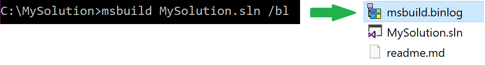
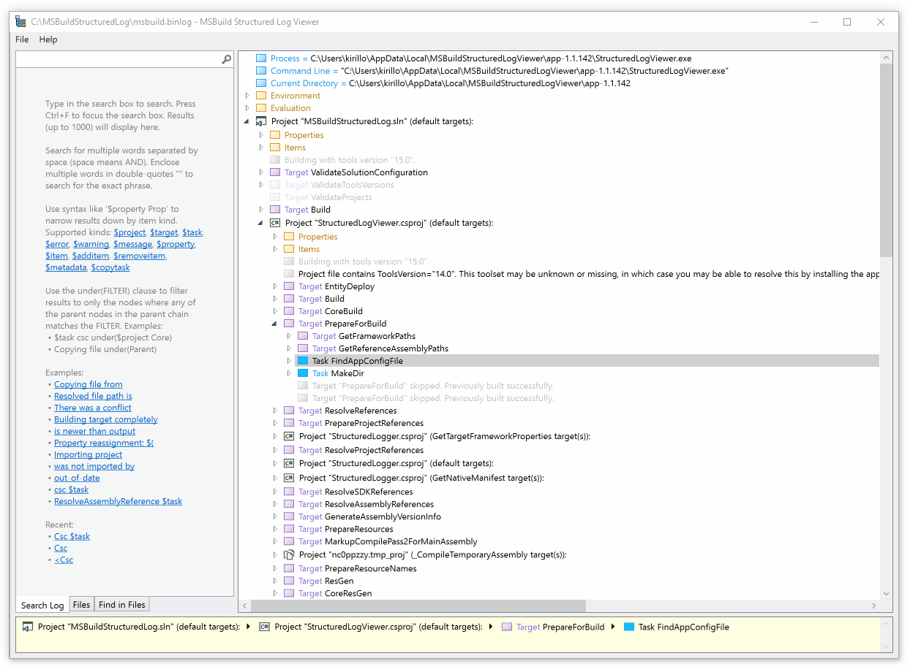
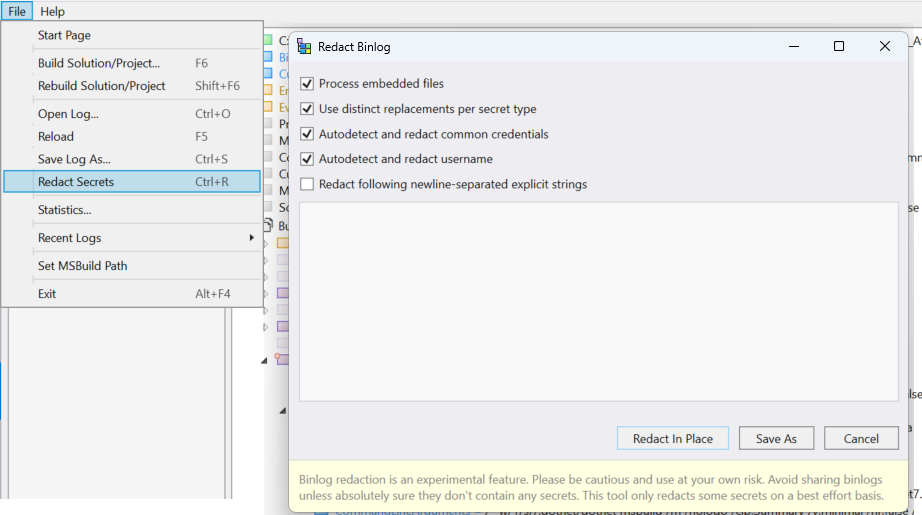

or, install from WinGet:
C:\> winget install KirillOsenkov.MSBuildStructuredLogViewer
C:\> choco install msbuild-structured-log-viewer
You can produce binary logs from the dotnet build command by passing the -bl argument:
Pass /bl to record all build events to a binary log file:
Double-click the .binlog file to open it in MSBuild Structured Log Viewer:

There are known limitations in binlogs obtained via the Project System Tools. Instead, try setting the MSBUILDDEBUGENGINE=1 environment variable as described here.
You can install the Visual Studio Project System Tools Extension (unsupported) to investigate builds inside Visual Studio:
You can pass a .binlog file to MSBuild instead of a project/solution to replay it to other loggers, as if a real build was happening. This allows you to reconstruct a text log of any verbosity given the .binlog file. Read more at: https://github.com/Microsoft/msbuild/wiki/Binary-Log#replaying-a-binary-log
The MSBuild Structured Log Viewer can build projects and solutions or open existing log files:

Leverage the source code of projects and targets embedded in the log file:
The viewer supports two file formats:
The viewer can read all formats and can save to *.xml.
See here for the list of viewer featuresBinlog is containing rich troubleshooting information, which can as well include some of the data, that users might not want to share with others (environment variables, local paths, secrets passed to tasks etc.) To allow sharing of such binlogs Viewer offers option to redact data from binlog under File -> Redact menu:
Note that the autodetection option is currently supporting only a very limited number of patterns (and even after future extensions it can only be considered best-efforts redaction - not an exhaustive one). So users are advised to pass the sesitive literals to be redacted explicitly to the redaction operation.
See MSBuild command-line help msbuild /? for more information on the /bl switch. The switch is available starting with MSBuild 15.3 (Visual Studio 2017 Update 3 or newer).
The built-in /bl switch was only introduced in MSBuild 15.3 (Visual Studio 2017 Update 3). However there is a way to record a binary log with previous versions of MSBuild as well. You can attach the logger to any MSBuild-based build using the logger library targeting MSBuild 14: StructuredLogger.dll. It is available in a NuGet package:
MSBuild.StructuredLogger.net45Or you could download it directly here: https://msbuildlog.com/net45/StructuredLogger.dll
Use a command-line such as this to pass the BinaryLogger to MSBuild:
Use the Project System Tools Visual Studio extension to record binary logs of IDE and design-time builds.
See more information about design-time builds here:
https://github.com/dotnet/project-system/blob/master/docs/design-time-builds.md
The binary log contains and exposes all environment variables from the machine that the build ran on. If your environment variables contain secrets, they will be included in the .binlog file in plaintext.
Additionally, the source code of all project (.csproj) and targets files (.props, .targets, etc) is embedded in the .binlog file as well.
Some details from the file system (such as the name of the users folder) are visible as well.
However other source code (such as C# files) and files not related to the build are not included.
Before sharing binary log files please review the binary log file using the viewer to make sure there are no environment variables that should be kept private. Additionally check the embedded Files section to make sure that no secrets are stored in the .csproj files.
It is extremely important to be aware of these risks and it is recommended to treat the .binlog files like you treat your source code.
Reference the MSBuild.StructuredLogger NuGet package. All you need is to reference StructuredLogger.dll from that package.
You may also need to reference MSBuild Microsoft.Build.Framework.
There are various APIs for various scenarios. A high-level API to read a .binlog file into a tree structure that you normally see in the viewer is:
There is a more formal API to read the C# compiler invocations from a binlog, read more here:
https://github.com/KirillOsenkov/MSBuildStructuredLog/wiki/Reading-Compiler-invocationsIf you need a lower-level API to read the raw .binlog records yourself you can use BinLogReader.ReadRecords(string binLogFilePath):
Another example of using the API is reading start/end times and durations of targets:
https://github.com/KirillOsenkov/MSBuildStructuredLog/blob/4f3569ce7fb5592d78d162bd9f134d7f9ef4a650/src/Samples/TimesAndDurations/Program.cs#L23The MSBuild Structured Log Viewer project is open-source on GitHub at:
https://github.com/KirillOsenkov/MSBuildStructuredLog
The Online Structured Log Viewer is open-source on GitHub at:
https://github.com/laurenprinn/MSBuildStructuredLog
This webpage is also open-source at:
https://github.com/KirillOsenkov/MSBuildLog